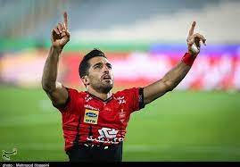

Vahid Amiri
Iranian football player
Vahid Amiri is an Iranian professional footballer who plays mainly as a winger for Persian Gulf Pro League club Persepolis and Iran national team. Amiri represented the Iran national football team at the 2015 and 2019 AFC Asian Cups and also the 2018 FIFA World Cup. Wikipedia
Born: April 2, 1988 (age 34 years), Khorramabad
Height: 1.85 m
Partner: Negin Beiranvand
Current team: Persepolis
Children: Kian Amiri
Parents: Ameneh Pourbiad, Hashem Amiri
Siblings: Farid Amiri, Majid Amiri